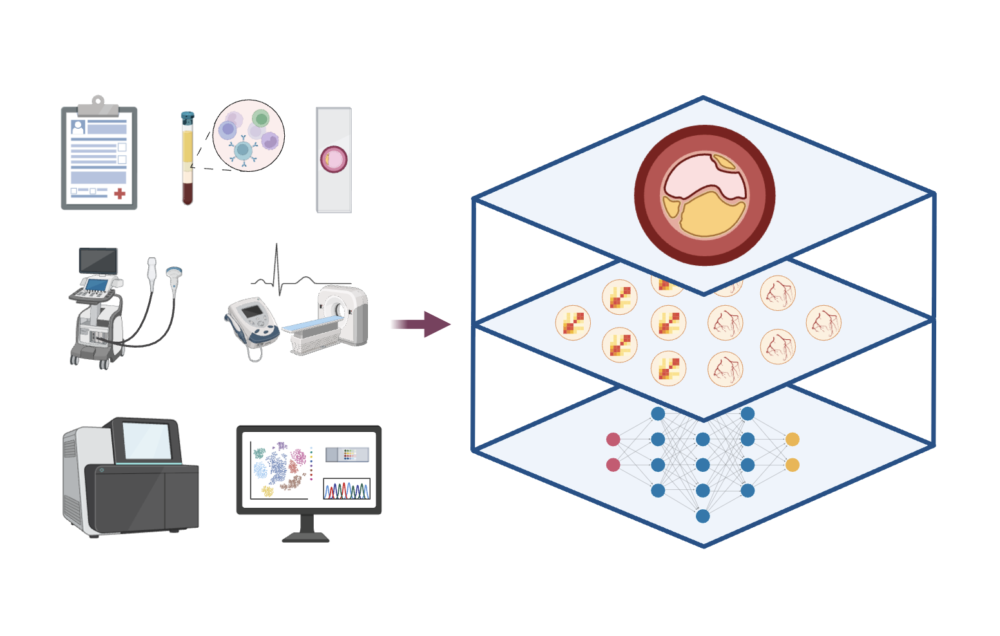
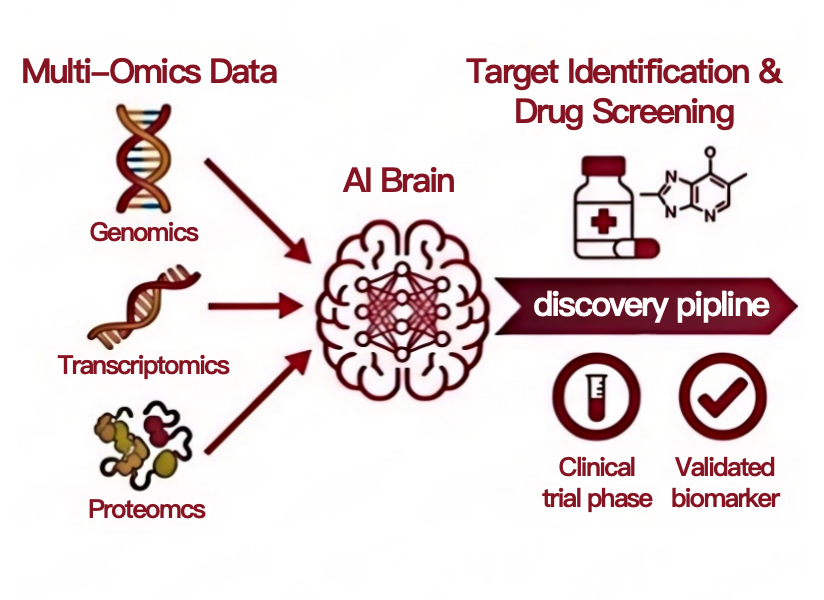

Research Overview
To date, 245 patients have been enrolled in the CE cohort, with 371 tissue samples collected. The HTx cohort offers a unique window into normal or early-stage coronary specimens, covering the continuous spectrum of lesions from early intimal thickening to advanced complex plaques. The team previously established the first single-cell transcriptomic atlas of normal human cardiac arteries, performed proteomic profiling on 20 coronary specimens spanning five histopathological stages, and laid a solid technical and data foundation for the construction of the CAMP coronary reference atlas.
Leveraging two unique clinical scenarios, we are integrating artificial intelligence-based modeling with multi-omics data to construct an open-access coronary reference atlas and a digital twin platform, aiming to drive the transition of CAD from conventional empirical therapy to molecular subtype-guided precision medicine.

